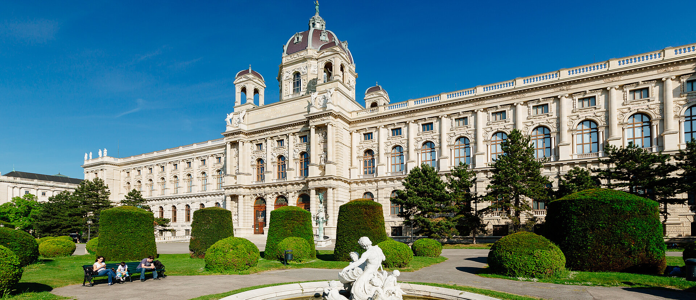
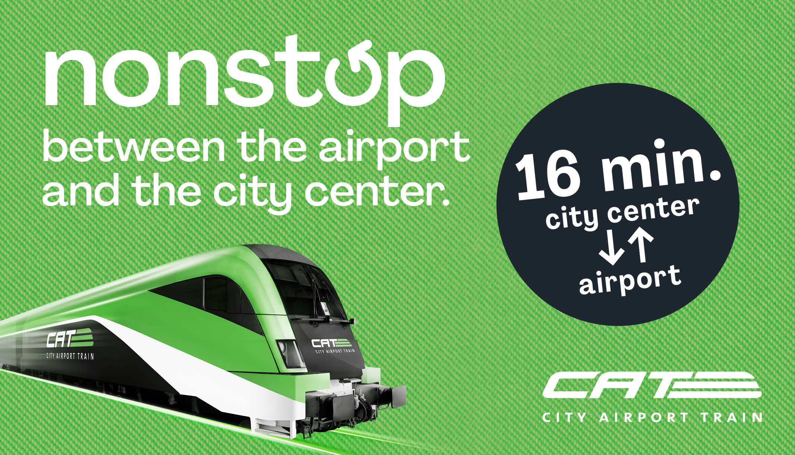

Découvrir l'Autriche
Que vous soyez de passage pour quelques jours ou installé durablement en Autriche, ce guide pratique vous accompagne pour ne manquer de rien à Vienne : transports, hébergement, restauration, visites et informations utiles.

Arrivée à l'aéroport de Vienne-Schwechat (VIE)
L'aéroport de Vienne-Schwechat se situe à environ 18 à 20 km du centre-ville, soit 20 à 30 minutes de trajet selon l'option choisie.
Taxi / Transfert privé
File de taxis officiels devant les arrivées (plaques se terminant par « TX », signe lumineux sur le toit).
- Taxi 40100 — forfait aéroport ~42 € (précisez « course aéroport » à la réservation)
- Taxi 31300 — forfait ~37 € via l'application
- Apps VTC : Bolt, Uber, FREE NOW (~19 à 57 €)
Idéal avec bagages ou en groupe

City Airport Train (CAT)
Train direct sans arrêt entre l'aéroport et Wien Mitte.
Idéal pour un trajet rapide et confortable
Train S7 (ÖBB)
Train régional reliant l'aéroport au centre-ville, avec plusieurs arrêts.
L'option la plus économique

Bus Vienna Airport Lines
Liaisons directes vers plusieurs points du centre-ville.
Pratique si votre hôtel est proche d'un arrêt
Se déplacer dans Vienne
Acheter son ticket
Les tickets s'achètent en ligne sur le WienMobil Ticketshop ou aux distributeurs dans les stations (sélectionnez l'anglais pour plus de facilité).
| Ticket | Tarif (2026) |
|---|---|
| Trajet simple (Einzelfahrt) | 3,20 € papier / 3,00 € appli |
| Pass 24h | 10,20 € |
| Ticket numérique 7 jours | 25,20 € |
| Vienna City Card (24h) | à partir de ~19 € |
Tarifs indicatifs (2026) — vérifiez les tarifs à jour sur wienerlinien.at →
⚠️ L'aéroport est hors de la zone centrale (Zone 100) : un ticket de ville ne suffit pas, il faut un supplément zone extérieure (~2,20 €) ou un ticket spécifique aéroport.
Téléchargez l'application WienMobil
L'application officielle des Wiener Linien permet d'acheter vos tickets (moins chers qu'en papier), de planifier vos trajets en temps réel et de réserver les vélos en libre-service.
Autres mobilités
- Vélos en libre-service WienMobil Rad, réservables via l'application
- Réseau dense : 5 lignes de métro (U-Bahn), tramways, bus et S-Bahn
- Bus de nuit le week-end pour rentrer en toute sécurité
Où séjourner à Vienne
Une sélection indicative d'hébergements répartis par budget, pour préparer votre séjour à Vienne.
Économique / Auberges
- Wombat's City Hostel Vienna
- MEININGER Hotel Wien
- ibis / Motel One Wien
Milieu / Supérieur
- Hotel Beethoven Wien
- The Harmonie Vienna
- Hotel Kaiserhof Wien
Haut de gamme
- Hotel Sans Souci Wien
- Hotel Altstadt Vienna
Les établissements et services cités sont fournis à titre informatif. L'Ambassade ne recommande ni ne garantit aucun prestataire privé. Tarifs indicatifs susceptibles de modification.
Manger à Vienne
Commander en ligne
Plusieurs plateformes de livraison de repas sont disponibles à Vienne :
Cuisine africaine & ouest-africaine
Pour retrouver les saveurs du pays — jollof rice, mafé, poulet braisé, attiéké :
- Mama's African Grill-Bar (10ème district)
- Ochei Restaurant
- Pat Kitchen
- Moyome
Spécialités viennoises à goûter
Wiener Schnitzel, Sachertorte, Apfelstrudel — et faites un tour au marché du Naschmarkt pour découvrir les saveurs locales.
Les établissements et services cités sont fournis à titre informatif. L'Ambassade ne recommande ni ne garantit aucun prestataire privé. Tarifs indicatifs susceptibles de modification.
Incontournables de Vienne
Quelques sites emblématiques à découvrir lors de votre séjour.

Informations pratiques
Numéros d'urgence
- Urgence européenne : 112
- Police : 133
- Pompiers : 122
- Ambulance : 144
- Urgence consulaire de l'Ambassade : +43 676 537 39 26
Santé
Pharmacies (Apotheke, croix verte) ; la pharmacie de garde est affichée sur la porte de chaque officine fermée. Pensez à votre carte européenne d'assurance maladie ou à une assurance voyage.
Argent
Distributeurs (Bankomat) largement disponibles, paiement sans contact très répandu. Pourboire usuel : 5 à 10 %.
Connectivité
Cartes SIM locales disponibles auprès de A1, Magenta, Drei ou HoT. WiFi public dans de nombreux lieux publics.
Météo & quand venir
Le printemps et l'automne sont les saisons les plus agréables. L'hiver est froid (marchés de Noël), l'été chaud et ensoleillé.
Quelques mots d'allemand utiles
- Grüß Gott — Bonjour
- Danke — Merci
- Bitte — S'il vous plaît / De rien
- Entschuldigung — Pardon / Excusez-moi
- Wie viel? — Combien ?
Étiquette & vie pratique
La ponctualité est très appréciée. Les magasins sont généralement fermés le dimanche. Le tri des déchets est rigoureux et les transports en commun se vivent dans le calme.
Excursions depuis Vienne
Bratislava (~1h), la vallée du Wachau, Salzbourg ou Graz sont facilement accessibles en train via les ÖBB.
Communauté ivoirienne & diaspora
Contactez l'Ambassade ou suivez nos réseaux sociaux pour être informé des événements de la communauté ivoirienne en Autriche.
Une question sur votre séjour ?
Notre équipe reste à votre disposition pour vous accompagner avant et pendant votre séjour en Autriche.